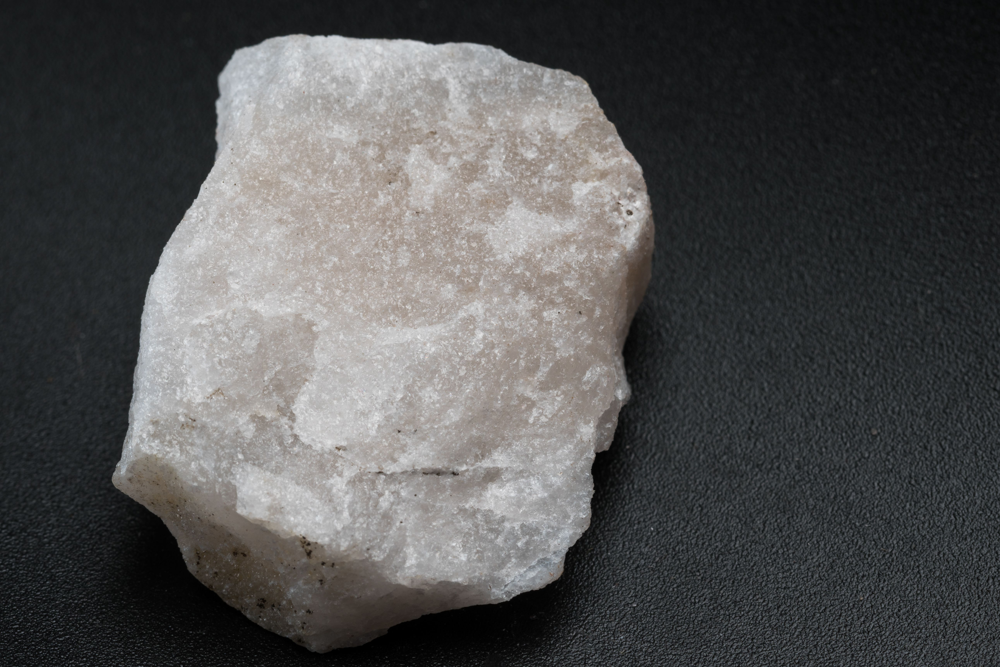

jewelery & Gems
jewelery always fits
classics
history
gems
contact me
Quartz is our most common mineral. Quartz is made of the two most abundant chemical elements on Earth: oxygen and silicon. Atoms of oxygen and silicon join together as tetrahedrons (three sided pyramids). These stack together to build crystals. Billions of tetrahedrons are needed to build even a small crystal.
quartz
- Agate
- thAmethyst
 Citrine
Citrine-  Quartzite
 Rose Quartz
Rose Quartz- Smokyquartz